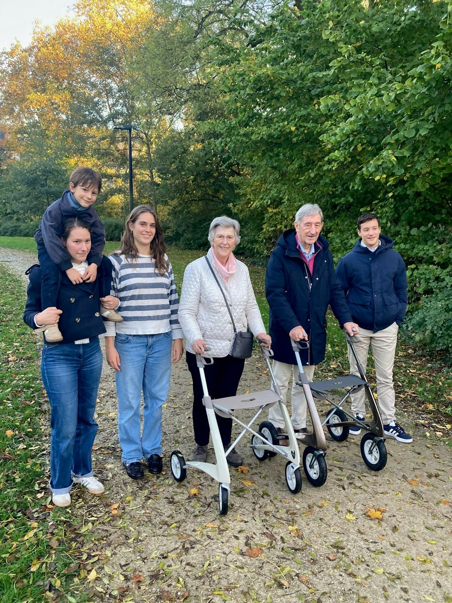

Una Decisión Importante Merece una Respuesta Clara, no una Venta Forzada
Las conversaciones sobre seguro de vida suelen ir aceleradas por agentes que cobran comisión. Pedimos presupuestos reales a las aseguradoras y te los explicamos con claridad — sin presión, sin jerga, a tu ritmo.
Sin presión, sin favorecer a ninguna aseguradora — solo presupuestos reales explicados con claridad.

Por Qué Elegir Confialy para tu Seguro de Vida
Esto importa más si alguien depende de tus ingresos — una pareja, hijos, o una hipoteca compartida — ya que la indemnización está pensada para reemplazar lo que habrías aportado. Importa menos si no tienes personas a cargo ni deuda compartida, en cuyo caso una póliza más pequeña (o ninguna) puede ser la respuesta honesta, y te lo diremos en lugar de venderte de más.
Comparamos planes en lenguaje claro, a tu ritmo.
Soporte bilingüe, para que una decisión importante no se pierda en la traducción.
Condiciones claras, una junto a otra — sabe exactamente qué se promete, a quién y cuándo.
¿Para Quién Es el Seguro de Vida?
Tienes personas que dependen económicamente de ti y quieres protegerlas.
Tu hipoteca exige o recomienda un seguro de vida, y quieres el mejor valor, no solo la opción por defecto del banco.
Te estás estableciendo en España a largo plazo y quieres resolver esto bien, de una vez.
¿Qué Cubre el Seguro de Vida en España?
- Capital por fallecimiento. Un pago único a tus beneficiarios designados si falleces durante la vigencia de la póliza.
- Extra de enfermedad grave. Un pago anticipado si te diagnostican una enfermedad grave cubierta, en algunos planes.
- Cobertura de invalidez permanente. Un pago ligado a los tres grados oficiales de invalidez (IPT, IPA, Gran Invalidez) que reconoce la Seguridad Social.
- Exoneración del pago de primas. Dejas de pagar las primas futuras si te declaran en situación de invalidez permanente, y la póliza sigue activa.
- Fallecimiento por accidente (doble capital). Algunos planes pagan el doble del capital asegurado si el fallecimiento se debe específicamente a un accidente.
- Cobertura de gastos de sepelio. Un importe menor que se paga rápido para cubrir gastos de sepelio, a menudo incluido de serie junto al capital principal.
- Cobertura vinculada a la hipoteca. Una póliza de capital decreciente dimensionada para saldar el resto de tu hipoteca si falleces.
- Flexibilidad de beneficiarios. Nombrar y después cambiar beneficiarios, incluidos los que viven fuera de España en la mayoría de planes.
Conviene revisarlo antes de comprar
Si el importe y el plazo de la indemnización encajan realmente con tu etapa actual de vida — las pólizas contratadas hace años para una hipoteca o un nivel de ingresos antiguo a menudo ya no cubren lo que tu familia necesitaría hoy.
La cobertura, los límites y las exclusiones exactas dependen de la aseguradora y el plan que elijas — las condiciones completas de la póliza se muestran antes de comprar.
Cómo Pedir tu Seguro de Vida en 4 Pasos
Cuéntanos qué necesitas
Un mensaje breve a través de nuestro formulario — sin obligación de compra.
Comparamos presupuestos reales
Revisamos ofertas de varias aseguradoras en tu nombre.
Tú eliges el plan
Te explicamos las opciones en lenguaje claro. Sin empujarte hacia ninguna aseguradora.
Te ayudamos a quedar asegurado
Seguimos en contacto hasta que tu póliza esté activa.
Preguntas Frecuentes sobre el Seguro de Vida en España
¿El seguro de vida es obligatorio para una hipoteca en España?
Muchos bancos lo exigen o lo recomiendan encarecidamente — te ayudamos a encontrar un plan que cumpla lo que pide tu banco sin pagar de más por su opción preferida.
¿La edad o la salud afectan a mi presupuesto de seguro de vida?
Sí, ambas suelen afectar al precio y las condiciones — esto forma parte del formulario de presupuesto para que las cifras que veas sean reales y no cambien después.
¿Puedo nombrar beneficiarios que vivan fuera de España?
Normalmente sí — confirmamos los detalles concretos con el plan que elijas.